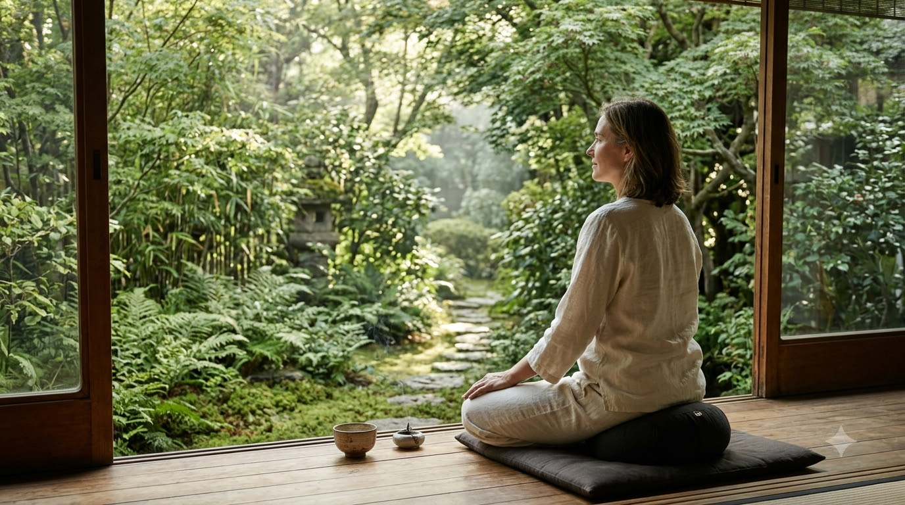
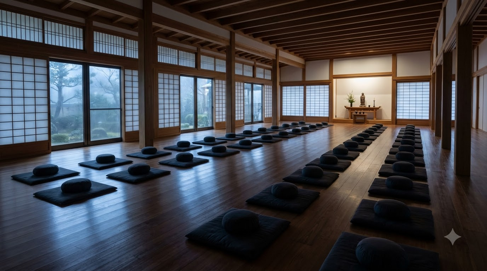
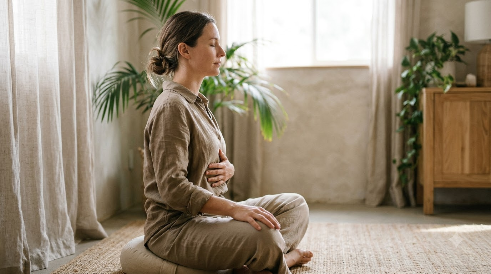
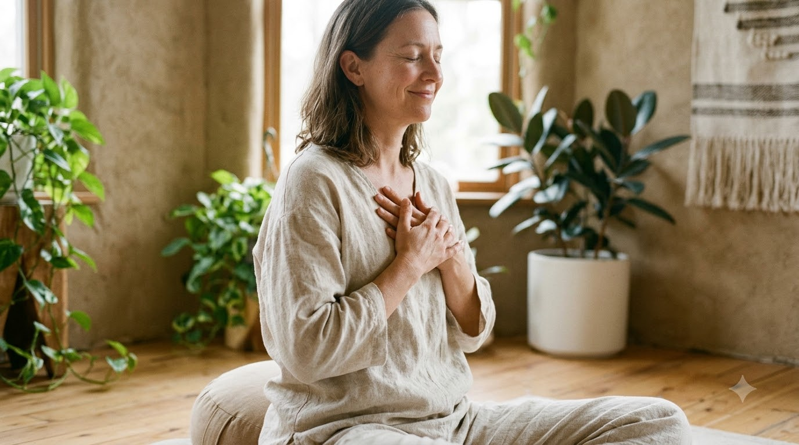
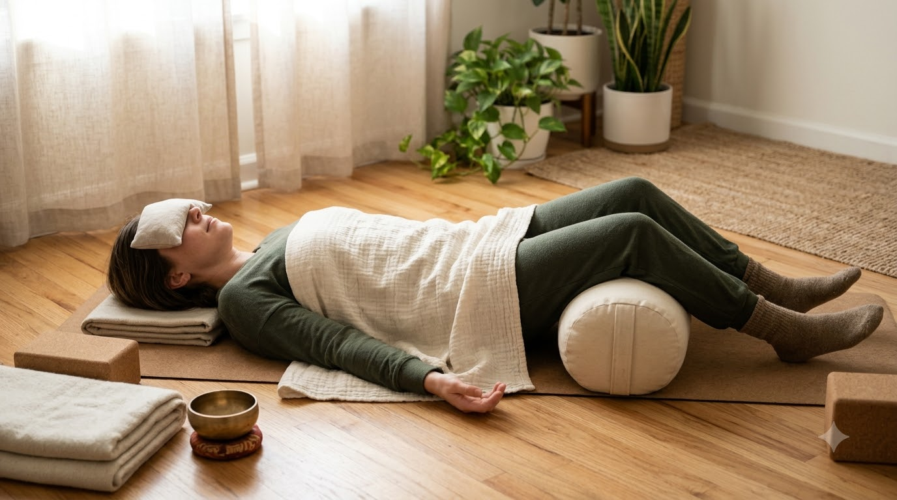
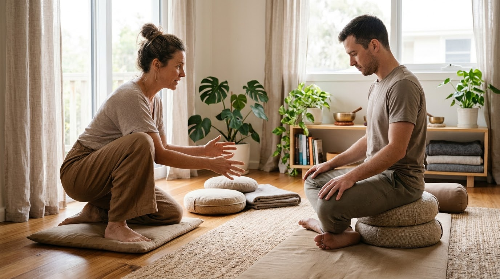

Meditation Programs
Explore our complete curriculum of mindfulness practices, seated sittings, breathwork, and sensory meditation sessions structured for all levels of experience.
Guided Meditation
Guided meditation provides continuous verbal facilitation, making it one of the most accessible entry points into mindful practice. An instructor gently guides your attention through breath grounding, body relaxation, and calming visualization cues.
What the practice involves:
Following spoken instructions to settle somatic restlessness, observe natural breath rhythms, and release cognitive grip without effort.
Typical session structure:
5-minute posture alignment → 20-minute guided inquiry → 5-minute quiet integration and transition.

Mindfulness Meditation
Mindfulness meditation cultivates open, non-judgmental awareness of whatever arises in the present moment. Rather than pushing thoughts away, participants learn to observe feelings and physical sensations as transient experiences.
What the practice involves:
Developing receptive metacognitive attention, noticing sensory signals, thoughts, and ambient sounds without labeling them good or bad.
Typical session structure:
Brief theme orientation → 30-minute anchored sitting → optional facilitator Q&A on daily application.
Silent Meditation
Silent meditation provides a quiet communal container free of verbal cues, background audio, or commentary. Participants sit together in communal stillness, anchoring in their own established practice.
What the practice involves:
Self-directed breath focus, somatic observation, and the supportive collective stillness of a quiet group room.
Typical session structure:
Singing bowl chime start → 35-minute uninterrupted silence → closing chime and unhurried transition.


Breath Awareness
Breath awareness utilizes calm, natural breathing techniques to encourage parasympathetic equilibrium. Rather than aggressive breath manipulation, this session centers on gentle cadence, rhythmic pacing, and somatic ease.
What the practice involves:
Diaphragm expansion, lengthening exhalations, box-cadence pacing, and noticing air temperature transitions at the nostrils.
Typical session structure:
Posture alignment → 20 minutes gentle paced breathing → 10 minutes restful natural recovery.
Loving-Kindness Meditation
Loving-Kindness (Metta) meditation systematically directs warm goodwill and benevolence toward oneself, loved ones, neutral acquaintances, and ultimately all living beings. It gently counters self-criticism and builds emotional warmth.
What the practice involves:
Silently repeating heartfelt phrases of safety, health, ease, and peace while holding specific individuals in warm mental focus.
Typical session structure:
Heart-centering breath → progressive outward circles of kindness → closing silence.


Body Scan Meditation
Conducted either seated or reclined on padded mats, the body scan guides attention incrementally from toes to crown. It fosters interoceptive awareness and helps systematically unwind muscular tension without physical exertion.
What the practice involves:
Noticing tingling, warmth, coolness, or tightness in sequential anatomical regions with non-reactive acceptance.
Typical session structure:
Reclining adjustment with bolsters → 35-minute anatomical awareness scan → gentle awaken sequence.
Sound Meditation
A passive meditative immersion where singing bowls, soft chimes, and resonant acoustic instruments provide an auditory anchor. The complex overtones assist active minds in gently disengaging from repetitive discursive thinking.
What the practice involves:
Allowing resonant sound vibrations to fill the room while maintaining restful listening awareness without judgment.
Typical session structure:
Opening silence → 35-minute acoustic bath → 5 minutes deep lingering silence → closing bell.

Personalized Meditation Sessions
Tailored one-on-one sessions structured around your individual schedule, posture requirements, and personal interests. Ideal for anyone desiring customized feedback on posture alignment or establishing a sustainable personal routine.
What the practice involves:
Individualized posture adjustment, customized breath pacing, tailored technique selection, and addressing personal challenges in stillness.
Typical session structure:
15-minute consultation → 30-minute tailored practice → 15-minute home routine planning.
Unsure Which Program to Start With?
Our Beginner's Guide walks you through first-time posture, comfortable expectations, and choosing the practice best aligned with your needs.
Read the Beginner's Guide